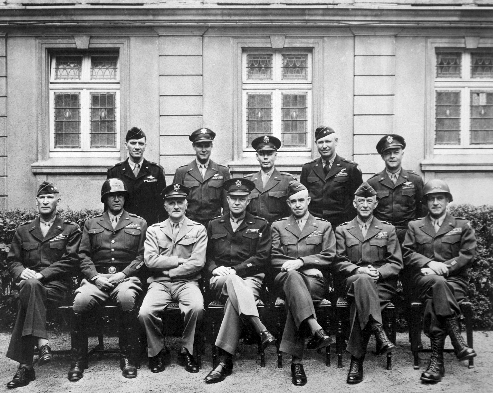

[Image. From Pexels by Lukas. June 25, 2016. (https://www.pexels.com/photo/multicolored-mixing-console-306088/)]
Circuit Switching Problem
Designed in 1878, circuit-switching was a method of creating a communications network between two people. Telephone calls were connected by two network nodes and established a channel. If the connection between two telephones is broken, the call is lost. This weakness became a national threat to the military when they were afraid of a Soviet Nuclear Attack. All the telephone lines were centralized in one location, and if an enemy blew up that location, no one would be able to communicate. USA knew they needed an indestructible communications network.

[Image. From Pixabay by 12019. Jan 30, 2013. (https://pixabay.com/images/id-76645/)]
General Dwight Eisenhower
General Dwight Eisenhower, supreme commander in World War II, and the 34th president of USA, played a big role in technology research. He saw that the future of war is technology. In other words, it will be very technologically advanced stuff that makes USA win economically. Thus, Eisenhower decided to invest in research, creating DARPA.
[Image. From Pexels by Alexandr Borecky. Oct 26, 2016. (https://www.pexels.com/photo/black-and-blue-framed-eyeglasses-on-silver-laptop-393044/)]
DARPA
DARPA, founded in 1958, was a government agency created for advanced research projects. Their main goal was to solve the circuit-switching problem. Soon, DARPA became a centralized agency that did all of the research for universities, big companies and the military. This provided some degree of civilian control and oversight through the congress of US.[Image. From Pixabay by anaterate. Aug 19, 2021 (https://pixabay.com/images/id-6553818/)]
J.C.R Licklider
J.C.R Licklider, was an American psychologist and computer scientist who is considered to be one of the notable figures in the development of the internet. Licklider created the idea of a universal network. In other words, he invented a way that a message could self-check itself that it was correct without sending a complete copy of the message again. His work invented a new field called information theory and his mathematics laid the theoretical groundwork for what a network would be.
[Image. From Pixabay by xresch. April 26, 2020. (https://pixabay.com/images/id-5090539/)]